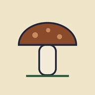
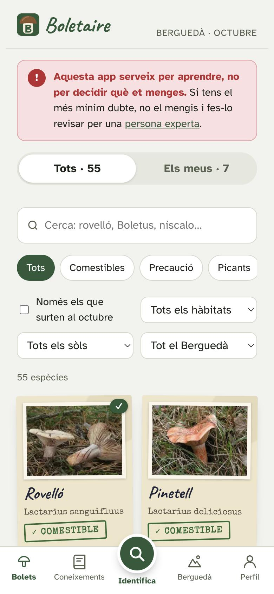
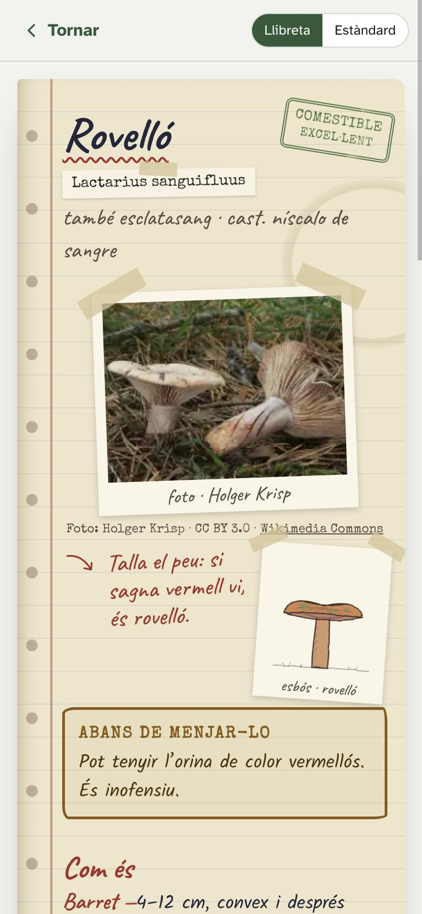
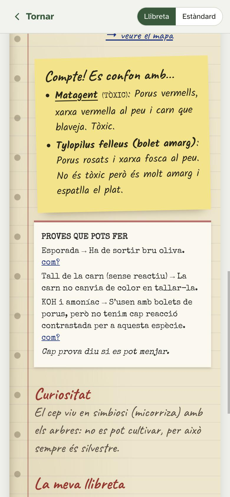
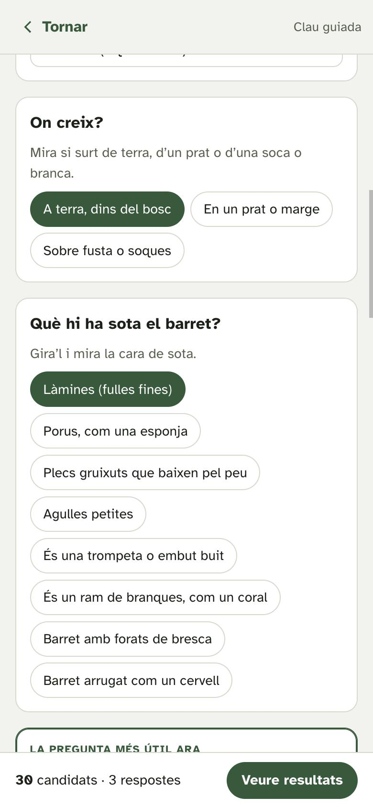
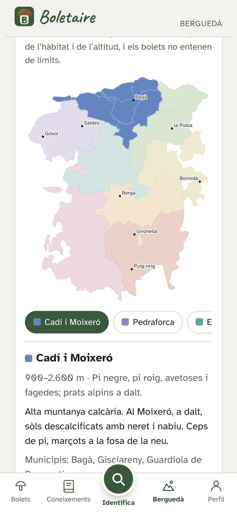
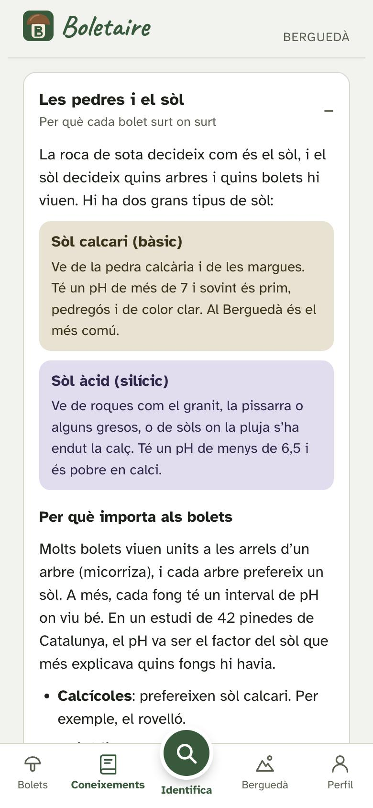
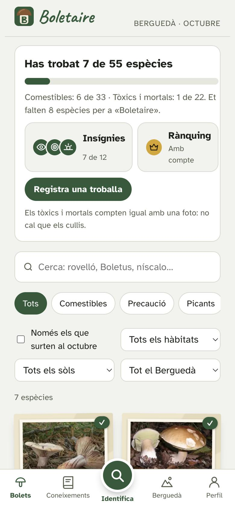
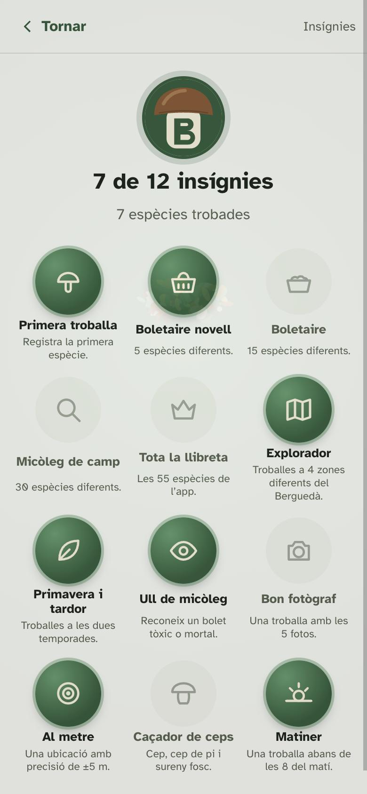

BoletaireBoletaire és una app gratuïta per al mòbil. Ensenya a mirar un bolet amb calma, a distingir-lo dels que s’hi assemblen i a saber on i quan surt a la comarca. Funciona al bosc sense cobertura.
Ara és un prototip. Abans de fer-la pública, volem que la revisin persones que en saben. Aquesta pàgina explica què fa i com hi podeu ajudar.

Cada any hi ha intoxicacions per bolets que s’han confós amb un comestible. Boletaire no vol substituir ningú que en sap: vol que la gent arribi a la persona experta amb més criteri i més prudència.

Noms populars, nom científic, com és el barret, el que hi ha a sota, el peu, la carn i l’esporada. També on surt, en quins mesos i en quin tipus de sòl.

Cada fitxa explica amb quines espècies es confon i quina diferència cal mirar. Quan el risc és un tòxic o un mortal, la nota ho diu clar: «Compte! Es confon amb…».
També hi ha les proves que es poden fer a casa (esporada, tall de la carn, reactius) i què n’esperar. Cada prova acaba igual: cap prova diu si es pot menjar.

Preguntes senzilles (on creix, què té sota el barret, de quin color és, si té làtex, anell o volva, a què fa olor, com canvia en tallar-lo) que van descartant espècies. L’app proposa primer la pregunta que més ajuda.
El resultat és una llista de candidats amb el que falta comprovar, mai una identificació segura.

Del Cadí i el Pedraforca fins a la vall del Llobregat i el Merlès. Per a cada zona: altitud, boscos, tipus de sòl i quins bolets s’hi poden trobar.
També hi ha els telèfons d’emergència i de toxicologia, les normes de collida i les fires i jornades micològiques de la comarca.

Temes curts per a qui comença: les parts d’un bolet, les paraules de les fitxes, les pedres i el sòl, què cal portar al bosc, les regles d’or, com fer una bona foto i el kit de reactius.
La part de geologia i sòls va sortir d’una xerrada amb un micòleg de la zona, i s’ha completat amb fonts publicades.

Cada persona pot registrar el que troba: fins a 5 fotos, la ubicació GPS precisa, la data i notes. Els tòxics compten igual amb una foto, sense haver-los de collir.
Els llocs on es troben bolets són privats: no es comparteixen ni es publiquen mai.

12 insígnies que premien aprendre, no collir més: reconèixer un tòxic, trobar bolets a diverses zones, fer bones fotos o una ubicació precisa.
Tot és voluntari i sense cap compromís d’horari. Qualsevol d’aquestes tres coses ja seria una gran ajuda.
Si voleu, a l’app constarà qui ho ha revisat.
A l’apartat Experts, perquè la gent us pugui ensenyar un bolet abans de menjar-se’l.
Ara les fotos són de Wikimedia Commons. Fotos fetes al Berguedà, amb el vostre crèdit, ajudarien a reconèixer els bolets tal com surten aquí.
Opcional. Només amb la llicència que vosaltres trieu.
A l’app recomanem portar sempre el bolet sencer a una persona experta. No us demanarem identificacions per foto.
Encara no l’ha revisada cap persona experta. Per això us escrivim.
Obriu l’enllaç al mòbil. Al menú del navegador, toqueu «Afegeix a la pantalla d’inici» o «Instal·la l’app» i quedarà com una app més.
Per a qualsevol dubte, comentari o correcció, escriviu a laugg95@gmail.com. Ens podem veure en persona o parlar per telèfon quan us vagi bé.